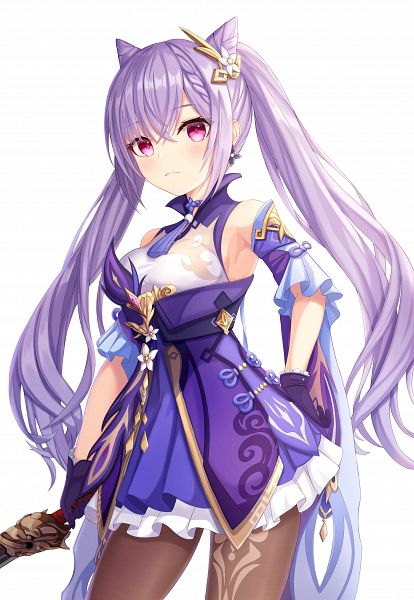

Keqing (Chinese: 刻晴 Kèqíng, "Sunny Moment" or "Delicate Carving") is a playable Electro character in Genshin Impact. As the Yuheng of the Liyue Qixing, she is someone who seeks her own answers instead of idly letting chaos run amok in Liyue. She chooses her own path with her own power and ability, instead of letting the gods determine her fate.
